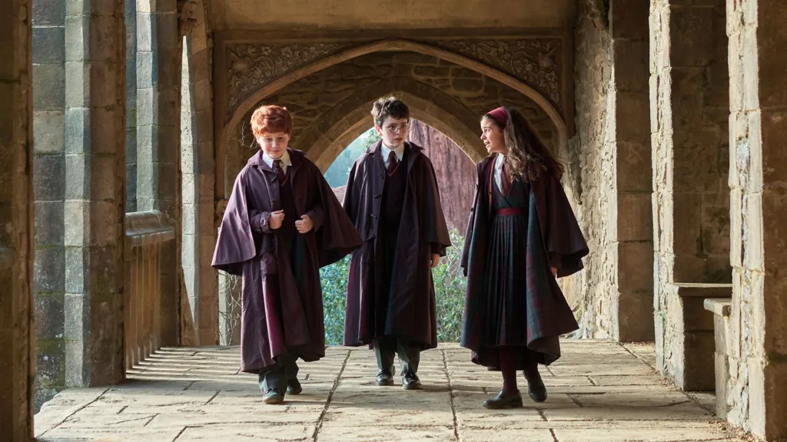

Few franchises have gone from a children's book to a global empire as completely as Harry Potter. It spawned seven novels, eight blockbuster films, a stage play, theme parks, and a hit video game, and it shaped a generation of readers and moviegoers.
Now the story is being told again. HBO's new series is set to arrive this Christmas, and the stakes are higher than a simple reboot might suggest.
The series will premiere on December 25, 2026, on HBO and its streaming service, HBO Max. For Warner Bros. Discovery, it is one of the most important launches on the calendar: a chance to revive its most valuable fantasy property for a new generation while keeping faith with the fans who grew up with the originals. Understanding what is at stake means looking back at how the franchise reached this point.
How a book series became a phenomenon
The first novel arrived in 1997, and the books grew into a publishing event, with midnight launches and readers who aged up alongside Harry. The films followed in 2001 and ran for a decade, finishing in 2011 with the second half of Deathly Hallows.
The movies kept a remarkably stable core cast, with Daniel Radcliffe, Rupert Grint, and Emma Watson growing up on screen, backed by a who's who of British acting. That consistency is a big part of why the series still feels so beloved. Across the eight films, the franchise earned well over $7 billion at the worldwide box office.
Behind the camera, the series passed through several directors, from Chris Columbus, who established the warm, storybook look of the early films, to Alfonso Cuarón, who gave the third installment a darker texture, to David Yates, who guided the final four. That evolution mirrored the books, which grew steadily more complex and more somber as Harry grew up, and it set a template for how the story can mature over time.
The spin-offs had a harder time
Expanding the world proved trickier than finishing the original story. The Fantastic Beasts films began in 2016 and aimed for a five-film run, but the series was cut short after three entries, and later installments drew weaker reviews and smaller audiences than the originals.
Other corners of the franchise fared better. The stage play Harry Potter and the Cursed Child became a long-running theater hit, and the 2023 game Hogwarts Legacy showed that fans were hungry to simply live in the world again.
The contrast is instructive. The projects that thrived put audiences inside the castle, the classroom, and the everyday magic of the original setting. The ones that struggled moved further from the characters and places people loved. The lesson was not lost on the studio, and it helps explain why the new series returns to the most familiar ground of all: Harry’s first year at Hogwarts.
Why HBO, and why now
The new series is built around a simple idea: give each book its own season. That allows the story to include detail the films had to trim. It is being developed by Francesca Gardiner as showrunner, with Succession director Mark Mylod directing multiple episodes.
The first season adapts Harry Potter and the Philosopher's Stone and uses the original U.K. title. HBO began filming in July 2025 at Warner Bros. Studios Leavesden, the same home as the original films. The premiere was first expected in 2027, but the first teaser trailer moved it up to Christmas 2026.
Warner Bros. Discovery first announced the project in 2023, and the plan is ambitious in scale. Each season is intended to cover one of the seven books, with the overall story unfolding over roughly a decade. The first season runs eight episodes, a length that gives the opening novel room to breathe without the compression of a two-and-a-half-hour film. The series is produced by HBO with Warner Bros. Television and Brontë Film and TV.
The road to Christmas Day
The marketing campaign has moved in stages. HBO unveiled the first official teaser in late March 2026 at an event in London, revealing both the season’s title and the surprise Christmas premiere window. A second trailer followed in early September, offering a closer look at Harry’s arrival at Hogwarts, the Sorting Hat ceremony, and a glimpse of Quidditch. Together, the footage has shown a version of the wizarding world that is recognizably faithful to the books while looking and feeling distinct from the films.
Moving the premiere up by roughly a year was a notable decision. It signals confidence from the network, and it also places the series squarely in the holiday viewing season, when families are most likely to watch together. For a franchise that has always marketed itself as an event for all ages, a Christmas Day launch is a natural fit.
The timing also reflects the competitive landscape. Streaming services are in constant pursuit of event programming that brings viewers in and keeps them subscribed, and few properties carry the built-in recognition of this one. A launch that arrives earlier than promised, backed by a steady drumbeat of trailers and casting news, gives the series momentum well before the first episode airs.
The new cast
The young leads are Dominic McLaughlin as Harry, Arabella Stanton as Hermione, and Alastair Stout as Ron, chosen from a huge open search. They are surrounded by a heavyweight adult cast:

- John Lithgow as Albus Dumbledore
- Janet McTeer as Minerva McGonagall
- Paapa Essiedu as Severus Snape
- Nick Frost as Hagrid
The supporting ensemble is just as notable. Katherine Parkinson plays Molly Weasley, Bel Powley and Daniel Rigby play Petunia and Vernon Dursley, and Luke Thallon takes on Professor Quirrell, a central figure in the first story. Paul Whitehouse plays the caretaker Argus Filch, Bertie Carvel plays Minister of Magic Cornelius Fudge, Johnny Flynn plays Lucius Malfoy, and Lox Pratt plays the young Draco Malfoy.
There is also one link to the past. Warwick Davis, who played Professor Flitwick in the films, returns to the role, making him the only actor from the original movies confirmed to be reprising a part. It is a small gesture, but a meaningful one, acknowledging the earlier adaptations without leaning on them.
What television can do that films could not
The central argument for the series is space. A two-hour film has to choose which scenes to keep, and the Harry Potter movies, however beloved, left out a great deal. Entire characters and subplots from the books were trimmed or removed, and many of the quieter moments that made the school feel like a living place never made it to the screen.
An eight-episode season can slow down. It can linger on classes, friendships, and the odd customs of the magical world, and it can give secondary characters the attention the page gave them. For readers, that promises a more complete adaptation. For newcomers, it offers a gentler on-ramp into a story that is far larger than its first chapter suggests.
What fans will be watching for
Every adaptation of a beloved story invites a particular kind of scrutiny, and this one will receive more than most. Longtime readers will look first at the details: whether the castle feels lived in, whether the humor of the early chapters survives, and whether the series captures the sense of wonder that made the first book so irresistible. The trailers suggest a deliberate effort to honor the text while giving the production design a fresh identity.
Tone will matter just as much. The early books are light and adventurous, but the story darkens as it goes, and a series planned across several years has the chance to grow with its audience rather than begin at a single register. How well the first season sets that foundation, balancing charm with the first hints of danger, will shape how viewers feel about everything that follows.
There is also the question of the audience itself. Many of the original readers are now parents, and the series is positioned to be watched across generations. That gives it an unusual opportunity: to be a shared experience for families who grew up with the books and children encountering Hogwarts for the first time.
The challenge ahead
The series faces two tough tests. First, it has to justify its own existence when the original films remain so familiar and so loved. Second, it has to hold audiences across what is planned as a long run, with one season per book.
The second test carries a practical complication. A ten-year production schedule means the young actors will grow up alongside their characters, which can be an asset but also a logistical risk. Casting, scheduling, and keeping a long-running story consistent are challenges that few television productions have attempted at this scale, and the series will need to navigate them while maintaining quality from season to season.
The franchise has also carried real controversy in recent years over the public statements of author J.K. Rowling, who is an executive producer on the series, and that debate is likely to follow the show's release. Her comments on gender and transgender rights have drawn criticism from many fans and critics and support from others, and the discussion has become part of the franchise’s public story.
Still, the fan appetite is plainly there. If the first season lands, Harry Potter may not just survive its reboot. It could become a television event that keeps the wizarding world going for another decade.